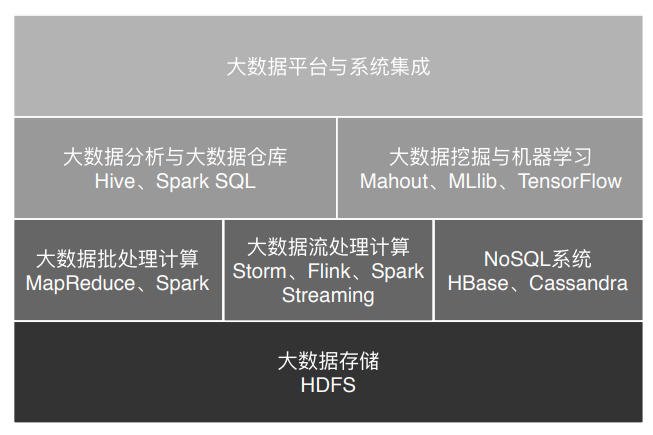

- 00 开篇词 为什么说每个软件工程师都应该懂大数据技术？.md
- 01 大数据技术发展史：大数据的前世今生.md
- 02 大数据应用发展史：从搜索引擎到人工智能.md
- 03 大数据应用领域：数据驱动一切.md
- 04 移动计算比移动数据更划算.md
- 05 从RAID看垂直伸缩到水平伸缩的演化.md
- 06 新技术层出不穷，HDFS依然是存储的王者.md
- 07 为什么说MapReduce既是编程模型又是计算框架？.md
- 08 MapReduce如何让数据完成一次旅行？.md
- 09 为什么我们管Yarn叫作资源调度框架？.md
- 10 模块答疑：我们能从Hadoop学到什么？.md
- 11 Hive是如何让MapReduce实现SQL操作的？.md
- 12 我们并没有觉得MapReduce速度慢，直到Spark出现.md
- 13 同样的本质，为何Spark可以更高效？.md
- 14 BigTable的开源实现：HBase.md
- 15 流式计算的代表：Storm、Flink、Spark Streaming.md
- 16 ZooKeeper是如何保证数据一致性的？.md
- 17 模块答疑：这么多技术，到底都能用在什么场景里？.md
- 18 如何自己开发一个大数据SQL引擎？.md
- 19 Spark的性能优化案例分析（上）.md
- 20 Spark的性能优化案例分析（下）.md
- 21 从阿里内部产品看海量数据处理系统的设计（上）：Doris的立项.md
- 22 从阿里内部产品看海量数据处理系统的设计（下）：架构与创新.md
- 23 大数据基准测试可以带来什么好处？.md
- 24 从大数据性能测试工具Dew看如何快速开发大数据系统.md
- 25 模块答疑：我能从大厂的大数据开发实践中学到什么？.md
- 26 互联网产品 + 大数据产品 = 大数据平台.md
- 27 大数据从哪里来？.md
- 28 知名大厂如何搭建大数据平台？.md
- 29 盘点可供中小企业参考的商业大数据平台.md
- 30 当大数据遇上物联网.md
- 31 模块答疑：为什么大数据平台至关重要？.md
- 32 互联网运营数据指标与可视化监控.md
- 33 一个电商网站订单下降的数据分析案例.md
- 34 A_B测试与灰度发布必知必会.md
- 35 如何利用大数据成为“增长黑客”？.md
- 36 模块答疑：为什么说数据驱动运营？.md
- 37 如何对数据进行分类和预测？.md
- 38 如何发掘数据之间的关系？.md
- 39 如何预测用户的喜好？.md
- 40 机器学习的数学原理是什么？.md
- 41 从感知机到神经网络算法.md
- 42 模块答疑：软件工程师如何进入人工智能领域？.md
- 所有的不确定都是机会——智慧写给你的新年寄语.md
- 第2季回归丨大数据之后，让我们回归后端.md
- 结束语 未来的你，有无限可能.md
01 大数据技术发展史：大数据的前世今生
在正式落地谈技术之前，我先花一些篇幅给你讲讲大数据技术的发展史，因为这对于你理解技术来说至关重要。
从我的角度而言，不管是学习某门技术，还是讨论某个事情，最好的方式一定不是一头扎到具体细节里，而是应该从时空的角度先了解它的来龙去脉，以及它为什么会演进成为现在的状态。当你深刻理解了这些前因后果之后，再去看现状，就会明朗很多，也能更直接地看到现状背后的本质。说实话，这对于我们理解技术、学习技术而言，同等重要。
今天我们常说的大数据技术，其实起源于Google在2004年前后发表的三篇论文，也就是我们经常听到的“三驾马车”，分别是分布式文件系统GFS、大数据分布式计算框架MapReduce和NoSQL数据库系统BigTable。
你知道，搜索引擎主要就做两件事情，一个是网页抓取，一个是索引构建，而在这个过程中，有大量的数据需要存储和计算。这“三驾马车”其实就是用来解决这个问题的，你从介绍中也能看出来，一个文件系统、一个计算框架、一个数据库系统。
现在你听到分布式、大数据之类的词，肯定一点儿也不陌生。但你要知道，在2004年那会儿，整个互联网还处于懵懂时代，Google发布的论文实在是让业界为之一振，大家恍然大悟，原来还可以这么玩。
因为那个时间段，大多数公司的关注点其实还是聚焦在单机上，在思考如何提升单机的性能，寻找更贵更好的服务器。而Google的思路是部署一个大规模的服务器集群，通过分布式的方式将海量数据存储在这个集群上，然后利用集群上的所有机器进行数据计算。 这样，Google其实不需要买很多很贵的服务器，它只要把这些普通的机器组织到一起，就非常厉害了。
当时的天才程序员，也是Lucene开源项目的创始人Doug Cutting正在开发开源搜索引擎Nutch，阅读了Google的论文后，他非常兴奋，紧接着就根据论文原理初步实现了类似GFS和MapReduce的功能。
两年后的2006年，Doug Cutting将这些大数据相关的功能从Nutch中分离了出来，然后启动了一个独立的项目专门开发维护大数据技术，这就是后来赫赫有名的Hadoop，主要包括Hadoop分布式文件系统HDFS和大数据计算引擎MapReduce。
当我们回顾软件开发的历史，包括我们自己开发的软件，你会发现，有的软件在开发出来以后无人问津或者寥寥数人使用，这样的软件其实在所有开发出来的软件中占大多数。而有的软件则可能会开创一个行业，每年创造数百亿美元的价值，创造百万计的就业岗位，这些软件曾经是Windows、Linux、Java，而现在这个名单要加上Hadoop的名字。
如果有时间，你可以简单浏览下Hadoop的代码，这个纯用Java编写的软件其实并没有什么高深的技术难点，使用的也都是一些最基础的编程技巧，也没有什么出奇之处，但是它却给社会带来巨大的影响，甚至带动一场深刻的科技革命，推动了人工智能的发展与进步。
我觉得，我们在做软件开发的时候，也可以多思考一下，我们所开发软件的价值点在哪里？真正需要使用软件实现价值的地方在哪里？你应该关注业务、理解业务，有价值导向，用自己的技术为公司创造真正的价值，进而实现自己的人生价值。而不是整天埋头在需求说明文档里，做一个没有思考的代码机器人。
Hadoop发布之后，Yahoo很快就用了起来。大概又过了一年到了2007年，百度和阿里巴巴也开始使用Hadoop进行大数据存储与计算。
2008年，Hadoop正式成为Apache的顶级项目，后来Doug Cutting本人也成为了Apache基金会的主席。自此，Hadoop作为软件开发领域的一颗明星冉冉升起。
同年，专门运营Hadoop的商业公司Cloudera成立，Hadoop得到进一步的商业支持。
这个时候，Yahoo的一些人觉得用MapReduce进行大数据编程太麻烦了，于是便开发了Pig。Pig是一种脚本语言，使用类SQL的语法，开发者可以用Pig脚本描述要对大数据集上进行的操作，Pig经过编译后会生成MapReduce程序，然后在Hadoop上运行。
编写Pig脚本虽然比直接MapReduce编程容易，但是依然需要学习新的脚本语法。于是Facebook又发布了Hive。Hive支持使用SQL语法来进行大数据计算，比如说你可以写个Select语句进行数据查询，然后Hive会把SQL语句转化成MapReduce的计算程序。
这样，熟悉数据库的数据分析师和工程师便可以无门槛地使用大数据进行数据分析和处理了。Hive出现后极大程度地降低了Hadoop的使用难度，迅速得到开发者和企业的追捧。据说，2011年的时候，Facebook大数据平台上运行的作业90%都来源于Hive。
随后，众多Hadoop周边产品开始出现，大数据生态体系逐渐形成，其中包括：专门将关系数据库中的数据导入导出到Hadoop平台的Sqoop；针对大规模日志进行分布式收集、聚合和传输的Flume；MapReduce工作流调度引擎Oozie等。
在Hadoop早期，MapReduce既是一个执行引擎，又是一个资源调度框架，服务器集群的资源调度管理由MapReduce自己完成。但是这样不利于资源复用，也使得MapReduce非常臃肿。于是一个新项目启动了，将MapReduce执行引擎和资源调度分离开来，这就是Yarn。2012年，Yarn成为一个独立的项目开始运营，随后被各类大数据产品支持，成为大数据平台上最主流的资源调度系统。
同样是在2012年，UC伯克利AMP实验室（Algorithms、Machine和People的缩写）开发的Spark开始崭露头角。当时AMP实验室的马铁博士发现使用MapReduce进行机器学习计算的时候性能非常差，因为机器学习算法通常需要进行很多次的迭代计算，而MapReduce每执行一次Map和Reduce计算都需要重新启动一次作业，带来大量的无谓消耗。还有一点就是MapReduce主要使用磁盘作为存储介质，而2012年的时候，内存已经突破容量和成本限制，成为数据运行过程中主要的存储介质。Spark一经推出，立即受到业界的追捧，并逐步替代MapReduce在企业应用中的地位。
一般说来，像MapReduce、Spark这类计算框架处理的业务场景都被称作批处理计算，因为它们通常针对以“天”为单位产生的数据进行一次计算，然后得到需要的结果，这中间计算需要花费的时间大概是几十分钟甚至更长的时间。因为计算的数据是非在线得到的实时数据，而是历史数据，所以这类计算也被称为大数据离线计算。
而在大数据领域，还有另外一类应用场景，它们需要对实时产生的大量数据进行即时计算，比如对于遍布城市的监控摄像头进行人脸识别和嫌犯追踪。这类计算称为大数据流计算，相应地，有Storm、Flink、Spark Streaming等流计算框架来满足此类大数据应用的场景。 流式计算要处理的数据是实时在线产生的数据，所以这类计算也被称为大数据实时计算。
在典型的大数据的业务场景下，数据业务最通用的做法是，采用批处理的技术处理历史全量数据，采用流式计算处理实时新增数据。而像Flink这样的计算引擎，可以同时支持流式计算和批处理计算。
除了大数据批处理和流处理，NoSQL系统处理的主要也是大规模海量数据的存储与访问，所以也被归为大数据技术。 NoSQL曾经在2011年左右非常火爆，涌现出HBase、Cassandra等许多优秀的产品，其中HBase是从Hadoop中分离出来的、基于HDFS的NoSQL系统。
我们回顾软件发展的历史会发现，差不多类似功能的软件，它们出现的时间都非常接近，比如Linux和Windows都是在90年代初出现，Java开发中的各类MVC框架也基本都是同期出现，Android和iOS也是前脚后脚问世。2011年前后，各种NoSQL数据库也是层出不穷，我也是在那个时候参与开发了阿里巴巴自己的NoSQL系统。
事物发展有自己的潮流和规律，当你身处潮流之中的时候，要紧紧抓住潮流的机会，想办法脱颖而出，即使没有成功，也会更加洞悉时代的脉搏，收获珍贵的知识和经验。而如果潮流已经退去，这个时候再去往这个方向上努力，只会收获迷茫与压抑，对时代、对自己都没有什么帮助。
但是时代的浪潮犹如海滩上的浪花，总是一浪接着一浪，只要你站在海边，身处这个行业之中，下一个浪潮很快又会到来。你需要敏感而又深刻地去观察，略去那些浮躁的泡沫，抓住真正潮流的机会，奋力一搏，不管成败，都不会遗憾。
正所谓在历史前进的逻辑中前进，在时代发展的潮流中发展。通俗地说，就是要在风口中飞翔。
上面我讲的这些基本上都可以归类为大数据引擎或者大数据框架。而大数据处理的主要应用场景包括数据分析、数据挖掘与机器学习。数据分析主要使用Hive、Spark SQL等SQL引擎完成；数据挖掘与机器学习则有专门的机器学习框架TensorFlow、Mahout以及MLlib等，内置了主要的机器学习和数据挖掘算法。
此外，大数据要存入分布式文件系统（HDFS），要有序调度MapReduce和Spark作业执行，并能把执行结果写入到各个应用系统的数据库中，还需要有一个大数据平台整合所有这些大数据组件和企业应用系统。

图中的所有这些框架、平台以及相关的算法共同构成了大数据的技术体系，我将会在专栏后面逐个分析，帮你能够对大数据技术原理和应用算法构建起完整的知识体系，进可以专职从事大数据开发，退可以在自己的应用开发中更好地和大数据集成，掌控自己的项目。
思考题
你从大数据生态的发展史中，能得出什么样的结论？又有怎样的思考？
欢迎你写下自己的思考或疑问，与我和其他同学一起讨论。
© 2019 - 2023 Liangliang Lee. Powered by gin and hexo-theme-book.